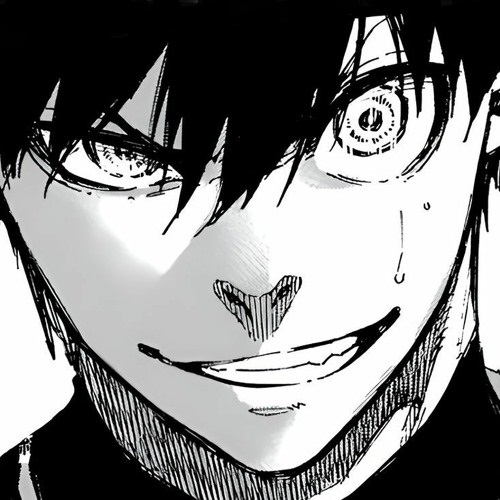

BLUE LOCK
Em um mundo onde o futebol é levado ao extremo, Blue Lock é uma instituição secreta e revolucionária que busca criar a próxima geração de talentos no esporte mais popular do mundo. A trama gira em torno de Isagi Yoichi, um jovem talentoso que é recrutado para participar do programa Blue Lock junto com outros jogadores promissores.
